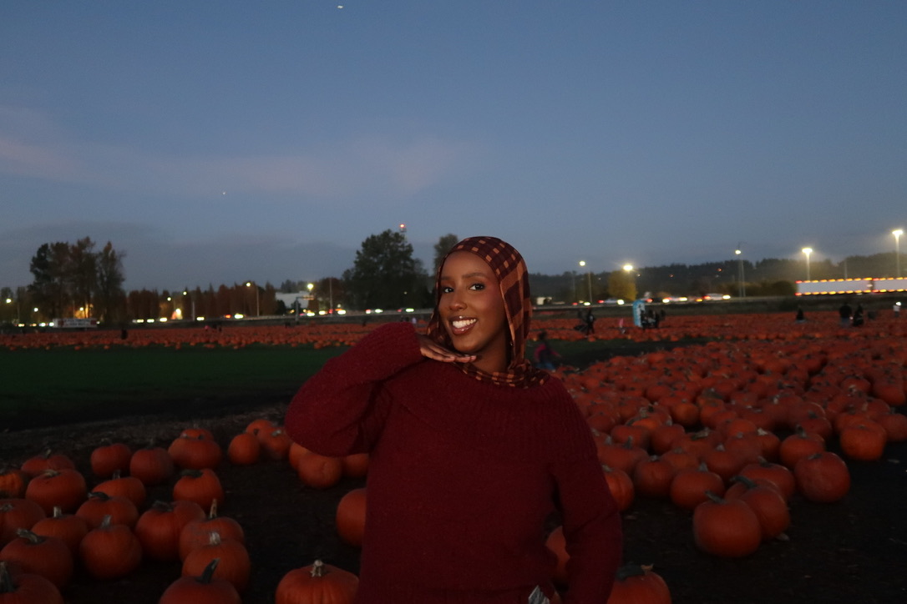

University of Washington
Bachelor of Science in Informatics, Information School
Expected December 2027
Relevant Coursework: Product and Information Systems Management, Data Science, Research Methods, Design Methods
ABOUT ME
I am studying Informatics at the University of Washington and building experience across UX design, research, front-end development, and digital ethics.

My interest in sociology shapes how I understand technology. Digital products do not exist separately from society—they reflect institutions, cultural expectations, unequal access, and the decisions of the people who create them.
I use this perspective to design experiences that are more understandable, inclusive, and responsive to users’ real lives.
View ResumeEDUCATION
Bachelor of Science in Informatics, Information School
Expected December 2027
Relevant Coursework: Product and Information Systems Management, Data Science, Research Methods, Design Methods
Associate of Arts, Data Emphasis
June 2025
EXPERIENCE
Green River College Career & Advising Center
October 2024 – June 2025
SKILLS & TOOLS
Figma, Canva, wireframing, prototyping, usability testing, user interviews, survey design
Python, Java, R, JavaScript, HTML, CSS
React, Vite, Git, GitHub, GitHub Pages
Excel, Google Sheets, Tableau, Word, PowerPoint, data visualization
LEADERSHIP & ACTIVITIES
Social Media Officer · September 2024 – June 2025
Managed Instagram content, designed promotional materials, and collaborated on events.
Organizer · September 2020 – June 2022
Organized community events, fundraisers, volunteer opportunities, and service projects.
Member · October 2019 – June 2023
Competed in business and marketing events and advanced to the state level each year.